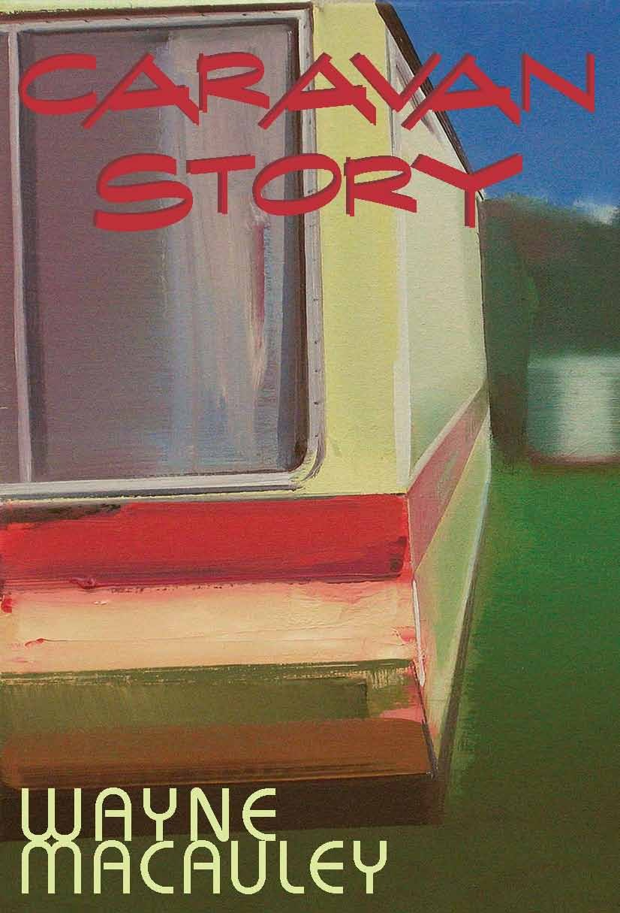

Caravan Story
Wayne Macauley

Description
So here I am, I’m going: it happens to us all. There is no rhyme nor reason. Even when you’ve sucked the fingers of the hand that feeds you it can still turn around and grab you by the throat. One morning, without warning, our narrator wakes into a nightmare. He and his female companion are put in a caravan and driven to a football oval in a faraway country town. There they join scores of other caravan-dwellers in a seemingly closed community. They are divided into groups, given their tasks. Then our narrator ‘escapes’, to an abandoned school in a big country town… Wayne Macauley has a gift for storytelling. He can, and cannot but help, spin a yarn. It is this continual shifting on of our attention through the description of the particulars of a scene that gives his writing such a weird intensity. Examining the darker side of our manufacture and manipulation of culture, Caravan Story is a deeply unsettling and at times hilarious read. With Macauley’s inexorable narrative logic we are held in its thrall until the sparkling, if muted, transfiguration of its ending. In an era when many Australian novelists are playing it safe... Wayne Macauley is an ambitious talent worth watching. Emmett Stinson, Wet Ink
Description
So here I am, I’m going: it happens to us all. There is no rhyme nor reason. Even when you’ve sucked the fingers of the hand that feeds you it can still turn around and grab you by the throat. One morning, without warning, our narrator wakes into a nightmare. He and his female companion are put in a caravan and driven to a football oval in a faraway country town. There they join scores of other caravan-dwellers in a seemingly closed community. They are divided into groups, given their tasks. Then our narrator ‘escapes’, to an abandoned school in a big country town… Wayne Macauley has a gift for storytelling. He can, and cannot but help, spin a yarn. It is this continual shifting on of our attention through the description of the particulars of a scene that gives his writing such a weird intensity. Examining the darker side of our manufacture and manipulation of culture, Caravan Story is a deeply unsettling and at times hilarious read. With Macauley’s inexorable narrative logic we are held in its thrall until the sparkling, if muted, transfiguration of its ending. In an era when many Australian novelists are playing it safe... Wayne Macauley is an ambitious talent worth watching. Emmett Stinson, Wet Ink
{kind=link}
Information
| ISBN | 9781876044534 |
| Release | 2007 |
| Pages | 168 |
About the Author
Reviews
Martin Shaw, Readings Monthly
Caravan Story Martin Shaw Readings Monthly , July 2007 (An edited version of this review appeared in The Monthly , July 2007) In 2004 Macauley published Blueprints for a Barbed-Wire Canoe to great acclaim, with one critic even going so far as to say that ‘if more Australian literature was of this calibre, we’d be laughing’. On the strength of this, his second, book, I must say I entirely agree ! But as much as the art of this book - its surreal, dreamlike atmosphere, its memorable cast of slightly sinister characters (à la Kafka) - seduces the reader, what really excites is Macauley’s provocative cultural intervention. The central premise is a not-so-far-away-as-you-might-think radical utilitarianization of the arts in Australian culture. A young couple, one a writer named Wayne Macauley, the other an actor, are removed from their inner-urban lodgings and taken by caravan to the local football oval at a small town in the Victorian countryside. There they find themselves in a new ‘community’ of like-minded cultural workers. Somewhat confused, Wayne begins work on his writing – until it becomes apparent that the community’s material is simply ending up in the garbage bin. The select few get the opportunity to render themselves ‘possibly’ useful by generating scripts for film or TV; the others simply vanish. His girlfriend, on the other hand, finds that her profession at least is deemed to have its uses – she finds herself on the road seven days a week in a traveling troupe, providing entertainment for demoralized country towns suffering from the drought, or making TV commercials. But in the camp even more artists are arriving on buses, it’s full to overflowing (in need of a final solution, in fact). A lament but also a call to arms, Caravan Story is a thrilling piece of satire, a compulsively readable, extremely well-wrought Orwellian fable that I believe announces the arrival of Macauley as a major Australian writer, one who definitely has something to say.
Owen Richardson, The Age
Macauley on the road again Owen Richardson The Age , 25 August 2007 Melbourne writer Wayne Macauley’s first novel, Blueprints for a Barbed-Wire Canoe , showed that a real talent had arrived, and his second confirms the promise. Like Kafka or Ballard, his books are set in a dreamlike parallel world that shines a light back onto ours. Allegory being hard to keep up at length, both those writers are better in their short stories than in their novels, and Macauley’s chosen form of the longish novella - about 150 pages -and his physical specificity show canniness and discipline, as well as ability. In Caravan Story , Wayne, a writer, and his actor girlfriend are rounded up along with their colleagues and made to live in caravans parked in a country town footy ground, like so many refugees or Jonestown cultists, and put to work on various projects. The writers fare the worst; the actors look as if they are going to spend their lives doing corporate training videos or public service ads, while the painters, well, they have all those community murals to do. The writers are sent back to school, literally - shades of Ferdydurke - in the hope they may have a future in TV and film and made to watch Chinatown over and over again and schooled in the jargon of story paradigms (set-up, confrontation, resolution), the rhetoric of the commercial arts. It’s a book written by someone who has had to fill out one grant application too many, or had to read the dreadful pap funding bodies put on their websites, until he’s started to bleed from the ears.
Radio New Zealand Review
Caravan Story Radio New Zealand, ‘Nine to Noon ’, 17 August 2012 For the audio of this review click here: http://www.radionz.co.nz/national/programmes/ninetonoon/audio/2528420/book-review-with-louise-o%27brien.asx
Australian Book Review Review
Caravan Story Tali Polichtuk Australian Book Review , No. 298, February 2008 In his lauded début novella, Blueprints for a Barbed-Wired Canoe (2004), Wayne Macauley charted the development and demise of a badly planned and hastily constructed outer-suburban housing development. Luring city-dwellers with cheap housing and a promised highway to enable quick access to the city, the government abandoned the project, leaving the residents to fend for themselves. In Caravan Story , Macauley’s second novella, the author renews his preoccupation with urban planning and hones his gift for allegory, spotlighting the plight of artists forcibly relocated to the countryside. Wayne, the narrator, is one of hundreds affected by this government policy. Evicted from the inner-city home he shares with his partner, Alice, they are moved to a football field cum caravan park in a Victorian country town. Here they are trained to channel their creative abilities (writing and acting, respectively) to utilitarian ends. The aim of the project is to turn them into citizens ‘[w]ho might make a worthwhile contribution to society’. This proves to be a futile exercise for Wayne and his fellow writers. Bureaucrats dispose of their work unread, their rejection letters having been drafted even before they began their menial writing tasks. An attack on the strip-mining of the arts, Caravan Story ’s strength lies in the manner of Macauley’s critique. Eschewing heavy-handed didacticism, he opts for economical prose imbued with subtle imagery. Housing serves as the key motif, a totemic symbol of the depletion of the community’s artistic freedom. The stationary caravan is a cogent metaphor for the precarious position of the handout-dependent artist, ‘[s]ucking on the dug of dubious benevolence’. Mixing elegy and whimsy, satire and black humour, language becomes pliant under Macauley’s command. The narrative palls when the author allows his characters to sermonise at length, but this is a small blemish in an otherwise engaging read.
Canberra Times Review
Ebb and flow of everyday life made new Emily Maguire (author) The Canberra Times , 8 December 2007 Reading a metafictional novel can be like working at a cryptic crossword. The cheeky winks and word play are good fun but in the end it’s all just so much diversion. At their best, however, such novels work to expand our understanding. Happily, Wayne Macauley’s use of metafictional techniques in Caravan Story is more revelatory than masturbatory; the head games and narrative tricks are directed toward getting the reader to think more deeply, not just more cleverly. The narrator of Caravan Story , also a writer named Wayne Macauley, is confused rather than shocked when he is herded into a caravan and driven to a country football ground. It seems Wayne and all the other writers, actors and painters have been involuntarily recruited to an artists’ colony in which they will be fed and watered so long as they beaver away at their set assignments. The actors and painters disappear fairly quickly; their skills are in high demand for corporate training videos, commercials and community murals. The writers, though, are less useful. ‘The question is,’ says the camp administrator at one point, ‘what good are all these writers, what possible worthwhile contribution could any of you possibly make, how could any of you ever possibly pay your way?’ After wasting the days writing pages that end up in the overflowing garbage cans behind the toilet block, the useless writers are sent - literally - back to school. Here they are bluntly told the ‘facts’: ‘You can hold on to your romantic dreams all you like... but there is only one way to make a living out of telling stories and that is having your stories told on celluloid within the paradigm of a three-act structure.’ On one level this book is a painful (to this novelist, anyway) satire on the endless round of grant, fellowship and residency applications that writers undertake in an attempt to eke out a living or improve their literary status. But it’s also an interrogation of the place of art, specifically literature, in our society. Is literature that is produced by demand or written to pre-defined parameters literature at all? Is a work of art only worth something if someone (anyone), somewhere (anywhere) is willing to pay for it? What’s the point of it all, anyway?
Readings Monthly book of the year
Citation as a Book of the Year (2007) My discovery of the year was Brunswick author Wayne Macauley. For anyone who thrills to a hypnotic prose style and incisive social satire, I would urge you to discover his work! His most recent novella is Caravan Story . Martin Shaw, Readings Monthly , December 2007-January 2008